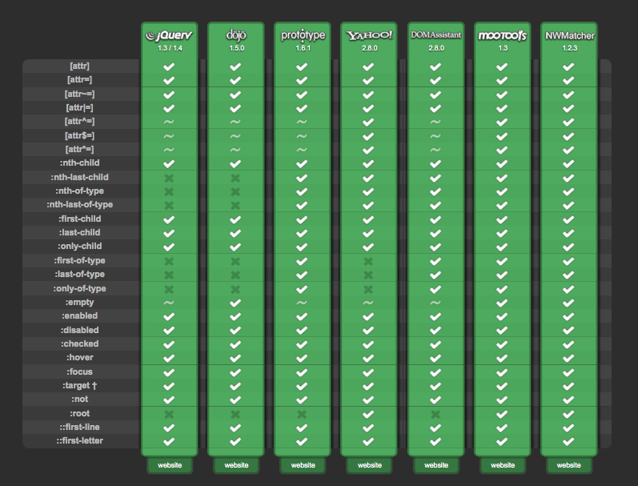

Polyfills For The Pragmatist
Jason Johnston
@lojjic, @css3pie


Pauly who?
Also known as:
shim, shiv, patch, hack
Term “polyfill” coined by Remy Sharp:
a piece of code (or plugin) that provides the technology that you, the developer, expect the browser to provide natively
Polyfill

FILL: fills in missing standard features or APIs when not natively available
POLY: can use multiple fallbacks depending on the browser and environment
Why are they needed?
“OldIE”
...but also newer browsers, to keep up with pace of HTML5
Wait a minute...
Don't most libraries smooth out browser incompatibilities?
Abstraction
You use standard code, not new APIs
Goal is to be invisible
Reasons To Use A Polyfill
- Expand your audience
- Speed up development time
- More time available for better things
- Only have to learn one API
- Stop hurting capable browsers

http://modernizr.com
- Not a polyfill!
- Makes polyfills easier to use
- Extensive feature detection library
- Includes YepNope (http://yepnopejs.com)
<html class="js no-flexbox no-flexbox-legacy no-canvas no-canvastext
no-webgl no-touch no-geolocation postmessage no-websqldatabase
no-indexeddb hashchange no-history draganddrop no-websockets
no-rgba no-hsla no-multiplebgs no-backgroundsize no-borderimage
no-borderradius no-boxshadow no-textshadow no-opacity
no-cssanimations no-csscolumns no-cssgradients no-cssreflections
no-csstransforms no-csstransforms3d no-csstransitions fontface
generatedcontent no-video no-audio no-localstorage
no-sessionstorage no-webworkers no-applicationcache no-svg
no-inlinesvg no-smil no-svgclippaths">

yepnope([{
test : /*boolean(ish) - Something truthy that you want to test */,
yep : /*array of strings | string - Things to load if test is true */,
nope : /*array of strings | string - Things to load if test is false*/,
both : /*array of strings | string - Load everytime (sugar) */,
load : /*array of strings | string - Load everytime (sugar) */,
callback : /*function ( testResult, key ) | object { key : fn } */,
complete : /*function */
}, ... ]);
yepnope({
test : window.JSON,
nope : 'json2.js'
});
yepnope({
test: Modernizr.geolocation,
yep: 'geo-styles.css',
nope: ['geolocation-polyfill.js', 'no-geo-styles.css']
});
Also from the Modernizr community:
The All-In-One Entirely-Not-Alphabetical No-Bullshit Guide to HTML5 Fallbacks
https://github.com/Modernizr/Modernizr/wiki/HTML5-Cross-Browser-Polyfills
Things Polyfills Implement
- HTML5 Elements
- JavaScript Language Features
- HTML5 JavaScript APIs
- CSS Selectors
- CSS Rendering
Ways Polyfills Work
1. Pure Markup
- Uses built-in HTML5 fallback mechanisms (e.g. element nesting)
- Can work if JS is not available
- Can result in bloated markup
- Code can be complex; use a generator
Ways Polyfills Work
2. JavaScript Global Object Creation
- For adding APIs that use a global object as their entry point
window.JSONwindow.localStoragewindow.WebSocket
- Do nothing if the object already exists
Ways Polyfills Work
3. JavaScript Object/Prototype Modification
- For adding properties/methods to existing JS or DOM object types
Object.createArray.prototype.forEachHTMLElement.prototype.addEventListener
- DOM prototype cannot be modified in IE < 8
Ways Polyfills Work
4. Plugins
- For when the feature cannot be implemented using native browser tech
<video><audio><canvas>- Device/filesystem access
- Rely on presence of plugins
- Sometimes multiple plugins used
- Weigh the security/stability/performance of the plugin
Ways Polyfills Work
5. CSS Parsing/Rewriting
- For when CSS is not recognized by the browser
- Advanced selectors
- Media queries
- Prefix insertion
- CSS fetched via XHR — same-domain limitation
- Parsed via RegExp, rewritten, and original stylesheet replaced with new
- Processing time grows with size of CSS
Ways Polyfills Work
6. DOM Querying
- DOM is traversed looking for certain elements/attributes, then modified
- Often used along with CSS parsing
- Must wait for document ready
- Best for static content, tough to respond to changes
Ways Polyfills Work
7. IE Behaviors (.htc)
- Script attached to elements via CSS
- IE only!
- Responds automatically to insertion/deletion of content
- Acts when element is ready, doesn't have to wait for whole document
- Gotchas: same-domain limitation, content-type header, path relative to HTML file
Let's explore a few...
html5shim / html5shiv
https://github.com/aFarkas/html5shiv
- OldIE incorrectly parses unknown elements:
<section>
<p>...</p>
</section>
becomes
<section></section>
<p>...</p>
- Unless you
createElement it!
document.createElement('section');
- Also fixes printing and adds default HTML5 element styles
<!--[if lt IE 9]>
<script src="//html5shiv.googlecode.com/svn/trunk/html5.js"></script>
<![endif]-->
HTML5 <video> / <audio>
JSON
https://github.com/douglascrockford/JSON-js
JSON.parse()JSON.stringify()- Adds global JSON object if not already present
- The polyfill came first, implemented natively in browsers later
HTML5 <canvas>
- ExplorerCanvas - http://code.google.com/p/explorercanvas/
- Uses VML (can't do everything)
- Decent for simple drawings
- DOM size can grow very large
- FlashCanvas - http://flashcanvas.net/
- JS bridge to a Flash plugin
- Good performance, large feature set
- Commercial ($31), or free version without some features (shadows, drawImage, imageData)
Webshims Lib
https://github.com/aFarkas/webshim/
- Aggregates many common polyfills into one package
- html5shiv
- FlashCanvas or ExplorerCanvas
- HTML5 form field types and validation
- MediaElement.js for audio/video
- JSON
- localstorage/sessionstorage
- geolocation
- Some ECMAScript 5 language features
- Polyfills loaded as needed
- Requires Modernizr and jQuery
Webshims Lib
https://github.com/aFarkas/webshim/
<script src="js/jquery.js"></script>
<script src="js/Modernizr-yepnope.js"></script>
<script src="js-webshim/minified/polyfiller.js"></script>
<script>
$.webshims.polyfill();
// wait until load and then use the features
$(function(){
JSON.parse('...');
});
</script>
Selectivizr
http://selectivizr.com/
- Parses CSS files for wide range of selectors
- Queries document for elements matching those selectors, via JS
- Uses one of many external selector libraries
- Runs on document ready, not dynamic

-prefix-free
https://github.com/LeaVerou/prefixfree
- Polyfill for modern browsers
- Fills in vendor-prefixed CSS3 property names so you don't have to
- Loads via XHR — same-domain limitation
IE7.js (and IE8.js, IE9.js)
http://code.google.com/p/ie7-js/
- One of the original polyfills
- Fixes HTML and CSS rendering bugs
- PNG alpha support in IE6
- Selectors
- Watch for performance
Respond.js
https://github.com/scottjehl/Respond
- Adds support for min/max-width based CSS media queries back to IE6
- Lightweight, no external dependencies
Flexie
http://flexiejs.com/
- Implements CSS3 flexible box model in IE and Opera
- Uses Selectivizr's engine for parsing and matching
CSS Sandpaper
https://github.com/zoltan-dulac/cssSandpaper
- Maps CSS3 properties to IE filters
transformbox-shadowlinear-gradienttext-shadowopacity
- Slightly non-standard code (
-sand-box-shadow etc.)
- Some filters do not render accurately
CSS3 PIE
http://css3pie.com/
- Renders several CSS3 box decoration properties in IE6-9
- border-radius
- box-shadow
- border-image
- linear-gradient
- multiple background images
- IE .htc behavior, or JS file
- Renders using VML in OldIE, SVG in IE9
...For The Pragmatist
Q: Should I use a polyfill?
A: Definitely maybe or maybe not.
- Decision to use a polyfill or not is complex.
- Graceful Degradation is often best, but not always.
- What will users do if functionality is missing for them?
- Users don't switch browsers, they switch sites.
Considerations
- Browser share of target audience
- System speed of target audience
- Necessity of the polyfill-able features
- Performance impact of the polyfill
- Performance impact of not using the polyfill
- Compatibility of multiple polyfills
- Debugging time
Sample Questions
“I'm deciding whether to use PIE instead of gracefully degrading. Should I use PIE?” NO.
“My project requires that IE users get the full design. Should I use PIE instead of cutting corner images?” MAYBE.
“My site needs to render as fast as possible, should I use PIE?” NO.
Assessing Performance
Polyfill creators don't typically publish performance stats; it's up to you to measure.
Common Factors
- Most polyfills use JavaScript which will always be slower than native
- Old browsers are also those with the slowest JS / DOM / rendering engines
- Downloading polyfill code takes time; always check its size
Assessing Performance
Polyfills that rewrite CSS
- Must usually fetch the CSS via XHR, might not be cached
- RegExp parsing is slow
- Parsing time grows with size of the CSS file
- Original CSS might already be parsed and applied
Assessing Performance
Polyfills that query the DOM
- IE < 8 does not have
querySelectorAll, must use JS traversal
- The larger the DOM the slower the query
- Reading certain properties (e.g.
offsetWidth) causes reflow
- Writing certain properties (e.g.
className) causes reflow
Compatibility Concerns
- Polyfills that modify the DOM can easily collide
- Non-polyfill libraries can conflict with polyfills
- Avoid using more than one polyfill that rewrites CSS
- Using
!important in CSS means polyfills can't modify .style
Don't Forget To Test!
In Conclusion,
Polyfills can greatly reduce development time and improve user experience.
But you need to weigh the pros and cons.
Polyfills will be with us long after OldIE is ancient history.